Relatório de Critérios de Aceite — Construtor de Camadas (Etapa 01: backend)
Resumo
Dossiê consolidado das 3 etapas do Construtor de Camadas (backend api → admin → client). Os 16 critérios CA37–CA52, o ciclo de vida RN06 sem DELETE e o CA29 da HU-GEO-01 estão evidenciados em três planos: transcript vivo da API (Sanctum stateful, PostGIS real), suítes automatizadas (Pest 108 testes do módulo; Vitest 21 admin + 26 client) e 24 capturas de navegador — Painel Global (catálogo, form em página, preview OpenLayers por organização de referência, dialogs de ciclo de vida, perfil somente leitura) e Painel do Tenant (sidebar com camadas mescladas desligadas por padrão, render heatmap/choropleth/markers, remoção ao vivo com toast CA48 e reativação CA49). Revisões: Etapa 01 APROVADO; Etapas 02 e 03 APROVADO COM RESSALVAS, com todos os achados baixos aplicados em commits fix ou registrados como notas ao PO.
| CA | Critério | Status |
|---|---|---|
| CA37 | Criação de camada válida (HU-CAM-01) | ATENDIDO · navegador + automatizado |
| CA38 | Bloqueio por dados obrigatórios (HU-CAM-01) | ATENDIDO · navegador + automatizado |
| CA39 | Nome duplicado (HU-CAM-01) | ATENDIDO · navegador + automatizado |
| CA40 | Pré-visualização por tenant de referência (HU-CAM-01) | ATENDIDO · navegador + automatizado |
| CA41 | Consulta sem permissão de edição — Operacional Global (HU-CAM-01) | ATENDIDO · navegador + automatizado |
| CA42 | Publicação global (HU-CAM-02) | ATENDIDO · navegador + automatizado |
| CA43 | Publicação direcionada (HU-CAM-02) | ATENDIDO · navegador + automatizado |
| CA44 | Bloqueio sem base geográfica homologada (HU-CAM-02) | ATENDIDO · navegador + automatizado |
| CA45 | Alteração de público com efeito imediato (HU-CAM-02) | ATENDIDO · navegador + automatizado |
| CA46 | Isolamento de dados na camada (HU-CAM-02) | ATENDIDO · navegador + automatizado |
| CA47 | Edição de camada publicada (HU-CAM-03) | ATENDIDO · navegador + automatizado |
| CA50 | Rastreabilidade das ações (HU-CAM-03) | ATENDIDO · navegador + automatizado |
| CA51 | Catálogo com filtros (HU-CAM-04) — lado servidor | ATENDIDO · navegador + automatizado |
| CA52 | Detalhe da camada com histórico (HU-CAM-04) — lado servidor | ATENDIDO · navegador + automatizado |
| RN06/P5 | Ciclo de vida sem exclusão — inativar/reativar/405 | ATENDIDO · navegador + automatizado |
| CA29* | CA29 da HU-GEO-01 — mescla do catálogo no painel (fechado aqui) | ATENDIDO · navegador + automatizado |
CA37 — Criação de camada válida (HU-CAM-01) ATENDIDO · navegador + automatizado
Critério (Gherkin): Dado que sou Administrador e as bases geográficas primárias estão homologadas, Quando informo nome, descrição, critérios de busca e forma de representação e salvo, Então a camada é criada com status de rascunho e passa a constar no catálogo.
Como foi testado: POST /api/geo-layers como super admin (Sanctum stateful) com nome, descrição, criteria.vulnerabilities=[receives_pbf] e representation=heatmap — Anexo A.
- HTTP 201; camada criada com status=draft e uuid próprio; aparece no GET /geo-layers.
- Pest: suíte GeoLayerController cobre criação e catálogo (Anexo B).
- UI: form em página '/app/geo-layers/nova'; camada 'Cobertura SCFV — evidência E2E' criada e listada como Rascunho.
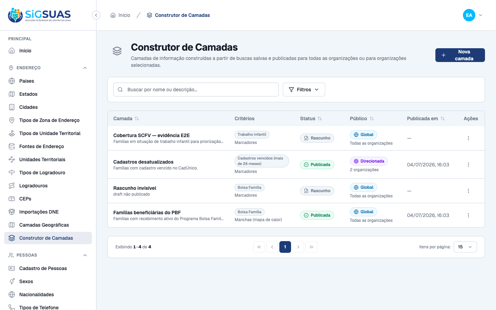
CA38 — Bloqueio por dados obrigatórios (HU-CAM-01) ATENDIDO · navegador + automatizado
Critério (Gherkin): Dado que estou criando uma camada, Quando tento salvar sem nome ou sem ao menos um critério de busca, Então o sistema bloqueia a ação e indica claramente os itens pendentes.
Como foi testado: POST /api/geo-layers sem name e com criteria={} — Anexo A.
- HTTP 422 na API com itens pendentes.
- UI: mensagens de campo 'Informe o nome/descrição da camada' e 'Informe ao menos um critério efetivo' bloqueiam o salvar.
CA39 — Nome duplicado (HU-CAM-01) ATENDIDO · navegador + automatizado
Critério (Gherkin): Dado que já existe uma camada com determinado nome, Quando tento salvar outra camada com o mesmo nome, Então o sistema bloqueia e informa que o nome já está em uso.
Como foi testado: POST /api/geo-layers com o mesmo nome em CAIXA ALTA (variação de caixa e acentos) — Anexo A.
- HTTP 422 na API (variação de caixa).
- UI: 'Já existe uma camada com este nome.' exibido no campo ao tentar criar 'COBERTURA SCFV — EVIDÊNCIA E2E' (caixa alta).
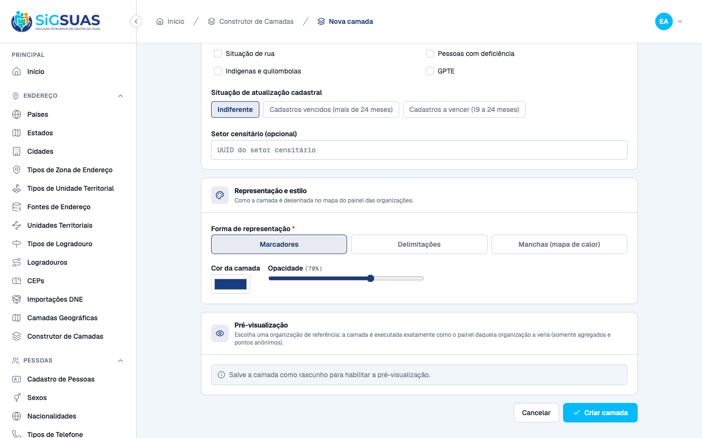
CA40 — Pré-visualização por tenant de referência (HU-CAM-01) ATENDIDO · navegador + automatizado
Critério (Gherkin): Dado que criei uma camada em rascunho, Quando aciono a pré-visualização escolhendo um município de referência, Então o sistema exibe a representação da camada sobre o mapa daquele município conforme os critérios definidos.
Como foi testado: Decisão do PO (2026-07-04): preview usa tenant único de referência (combobox). POST /geo-layers/{uuid}/preview com tenant_uuid do tenant 1 (Fortaleza) — Anexo A (inclui adendos).
- Cenário negativo: tenant sem município com geometria homologada → HTTP 422 com mensagem clara.
- Cenário positivo: HTTP 200 com city_geometry de Fortaleza, total=6, by_sector com 2 setores fixture e 6 pontos anônimos (chaves só lat/lng/count — sem PII).
- Trilha: event=previewed com properties={tenant: uuid} (LGPD).
- Nota de ambiente: geometria/setores de Fortaleza estavam is_active=false no banco e2e (efeito replace-all da sync #9868) e foram reativados — artefato de massa, não bug de produto.
- Nota ao PO (revisão Etapa 02, severidade média): no preview de 'Delimitações', o admin desenha polígono municipal + pontos + tabela por setor; o choropleth por setor é renderizado no painel do tenant (o contrato manager não expõe geometrias de setor).
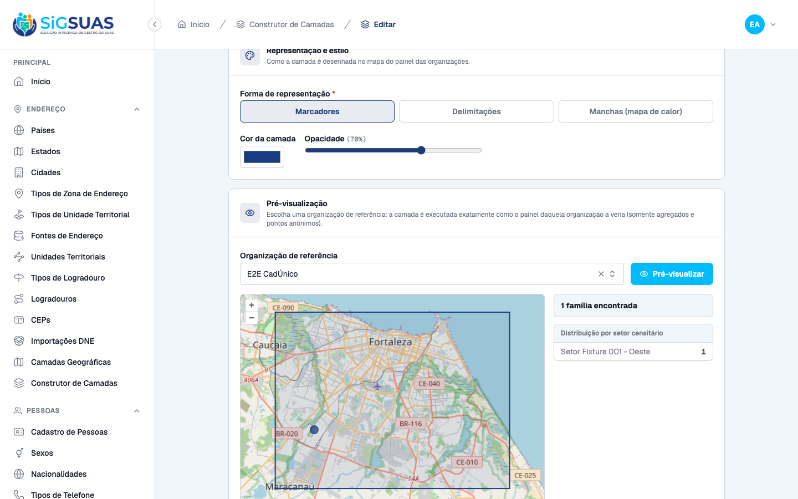
CA41 — Consulta sem permissão de edição — Operacional Global (HU-CAM-01) ATENDIDO · navegador + automatizado
Critério (Gherkin): Dado que sou Operacional Global, Quando acesso o catálogo de camadas, Então visualizo a lista com status e público de cada camada, sem comandos de criação, edição ou publicação.
Como foi testado: Lado servidor: RoleSeeder concede só geo-layers.index/show ao papel admin_operador; escrita → 403 (Pest, Anexo B). Evidência visual da UI deferida à Etapa 02 (admin).
- Pest: admin_operador lê catálogo/detalhe; os 7 verbos de escrita retornam 403.
- UI: logado como Operacional Global (papel admin_operador), o catálogo não exibe 'Nova camada' e o menu Ações só traz 'Ver detalhes'; rota /nova responde 403 Acesso negado.
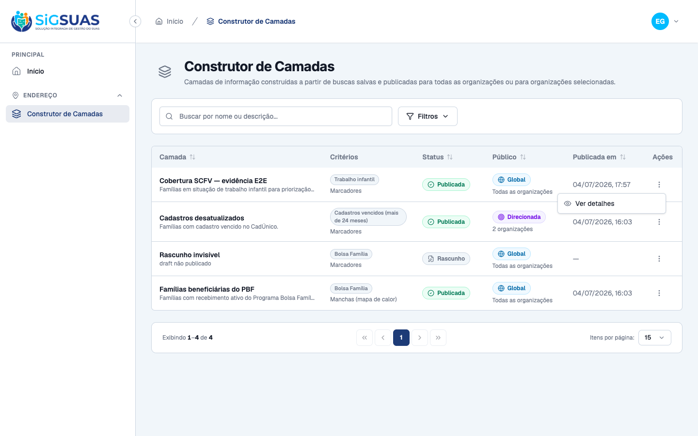
CA42 — Publicação global (HU-CAM-02) ATENDIDO · navegador + automatizado
Critério (Gherkin): Dado que tenho uma camada em rascunho válida, Quando publico com público 'todos os tenants', Então a camada passa a aparecer na barra lateral do Painel de Georreferenciamento de todos os tenants ativos, desligada por padrão.
Como foi testado: POST /geo-layers/{uuid}/publish com audience=global; em seguida GET /api/client/geo-panel/layers como master do tenant 1 — Anexo A.
- HTTP 200: status=published, published_at gravado.
- Listagem do tenant mescla 3 built-ins + camada custom (kind=custom, builtin=false) — fecha também o CA29 da HU-GEO-01.
- UI (client): camada global 'Famílias beneficiárias do PBF' ligada no painel do tenant renderiza mancha (heatmap OL) sobre Fortaleza. Nota ao PO: o heatmap OL usa o gradiente default (a cor/palette da camada é aplicada em markers/boundaries; opacidade respeitada).
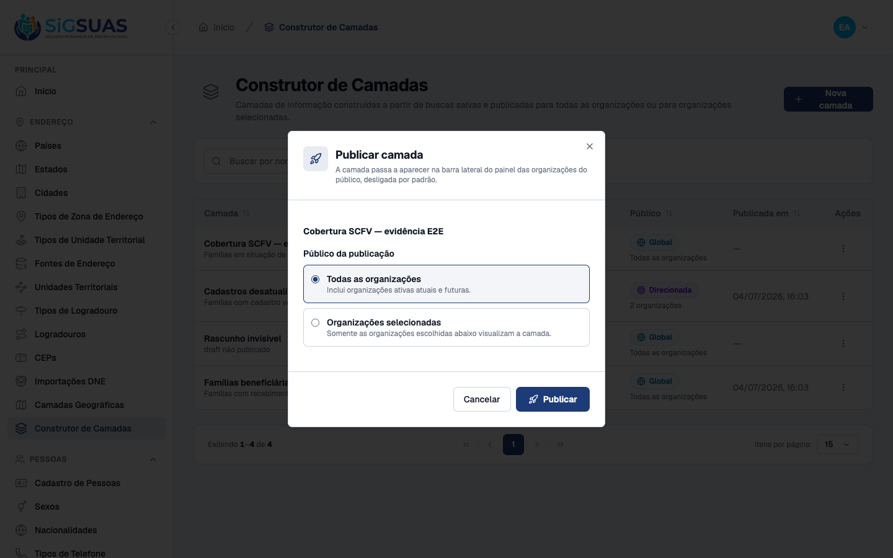
CA43 — Publicação direcionada (HU-CAM-02) ATENDIDO · navegador + automatizado
Critério (Gherkin): Dado que tenho uma camada em rascunho válida, Quando publico selecionando tenants específicos, Então somente os tenants selecionados passam a visualizar a camada em seus painéis.
Como foi testado: 2ª camada publicada com audience=selected apenas para o tenant 2; fetch do tenant 1 — Anexo A.
- Camada L2 published/selected; 'L2 visível p/ tenant 1? False'.
- Pest cobre o positivo (tenant selecionado vê) e o negativo.
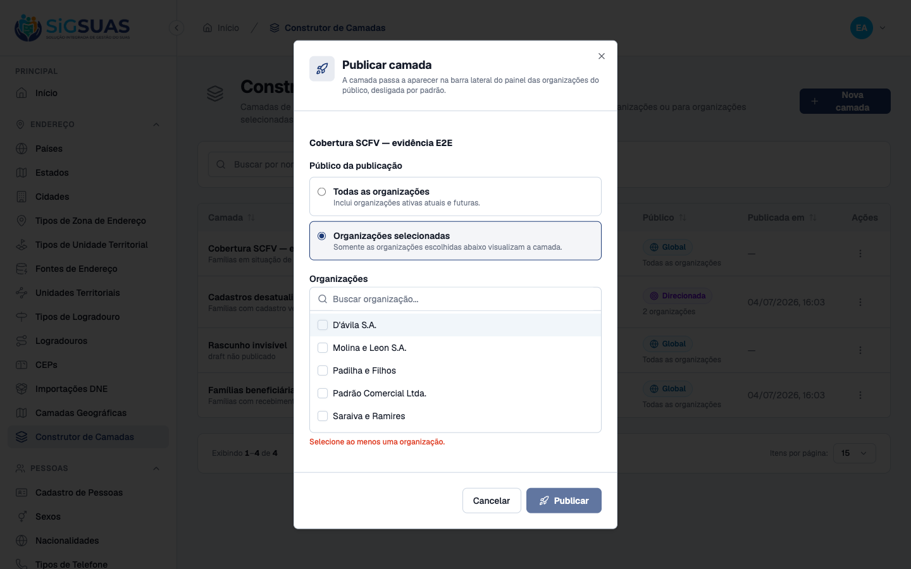
CA44 — Bloqueio sem base geográfica homologada (HU-CAM-02) ATENDIDO · navegador + automatizado
Critério (Gherkin): Dado que as bases geográficas primárias não estão homologadas, Quando tento publicar uma camada, Então o sistema bloqueia a publicação e informa a pendência das bases obrigatórias.
Como foi testado: Flip temporário de sync_status das bases (synced→syncing) via tinker, tentativa de publish, reversão — Anexo A.
- API: HTTP 422 com a pendência das bases (flip temporário de sync_status, revertido).
- UI: alerta dentro do dialog de publicação orientando a homologar as duas bases em Importações de Camadas Geográficas.
- Pest: matriz completa da trava RN03.
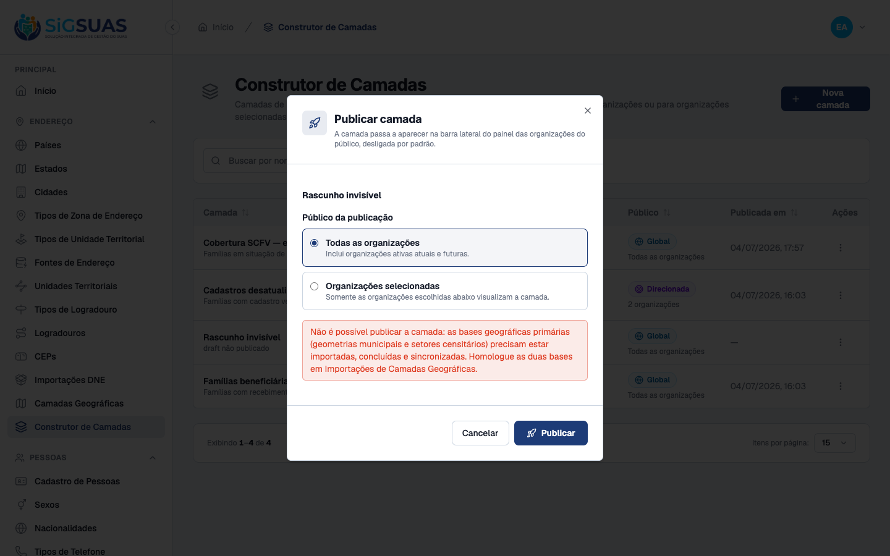
CA45 — Alteração de público com efeito imediato (HU-CAM-02) ATENDIDO · navegador + automatizado
Critério (Gherkin): Dado que uma camada está publicada para tenants específicos, Quando altero o público incluindo ou removendo tenants, Então a disponibilidade da camada é atualizada imediatamente nos painéis dos tenants afetados.
Como foi testado: PATCH /geo-layers/{uuid}/audience incluindo o tenant 1; próximo GET do tenant 1 sem nenhuma outra ação — Anexo A.
- 'L2 visível p/ tenant 1?' passa de False para True no fetch imediatamente seguinte — visibilidade resolvida em leitura, sem cache/materialização.
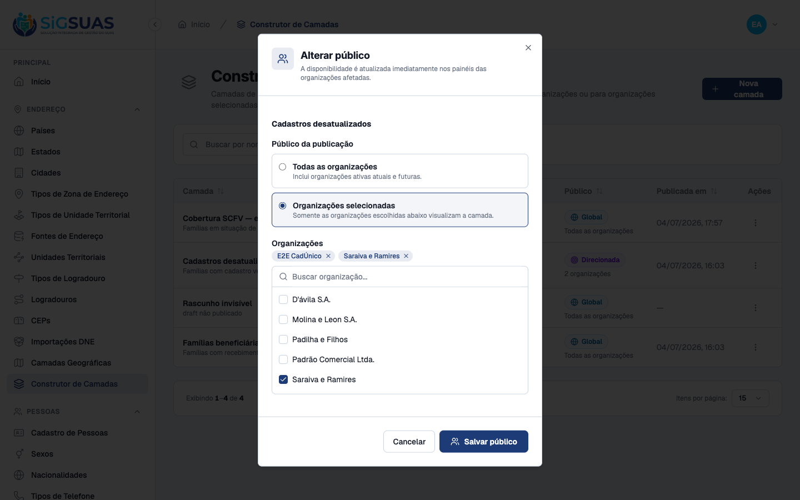
CA46 — Isolamento de dados na camada (HU-CAM-02) ATENDIDO · navegador + automatizado
Critério (Gherkin): Dado que uma camada foi publicada globalmente, Quando um tenant a liga em seu painel, Então visualiza apenas os dados do seu próprio escopo, sem qualquer dado de outro tenant.
Como foi testado: GET /api/client/geo-panel/layers/{uuid}/data com X-Tenant-UUID do tenant 1; camada draft consultada pelo tenant — Anexo A.
- Dados executados sob o tenant consumidor: total=6, pontos anônimos (lat/lng/count).
- Camada draft/não visível → HTTP 404 (nunca 403 — não vaza existência).
- Pest: 2 tenants no mesmo município com massas próprias → pontos 100% disjuntos; tenant_id vem do header validado pelo EnsureTenantScope (merge sobrescreve forjado).
- UI (client): render por representação sob o escopo do tenant — choropleth por setor com intensidade graduada (4/2 famílias, cor do style #7c3aed) e marcadores anônimos graduados. Nota: no engine Leaflet o heatmap tem paridade mínima (círculos difusos), registrado como débito de paridade visual.
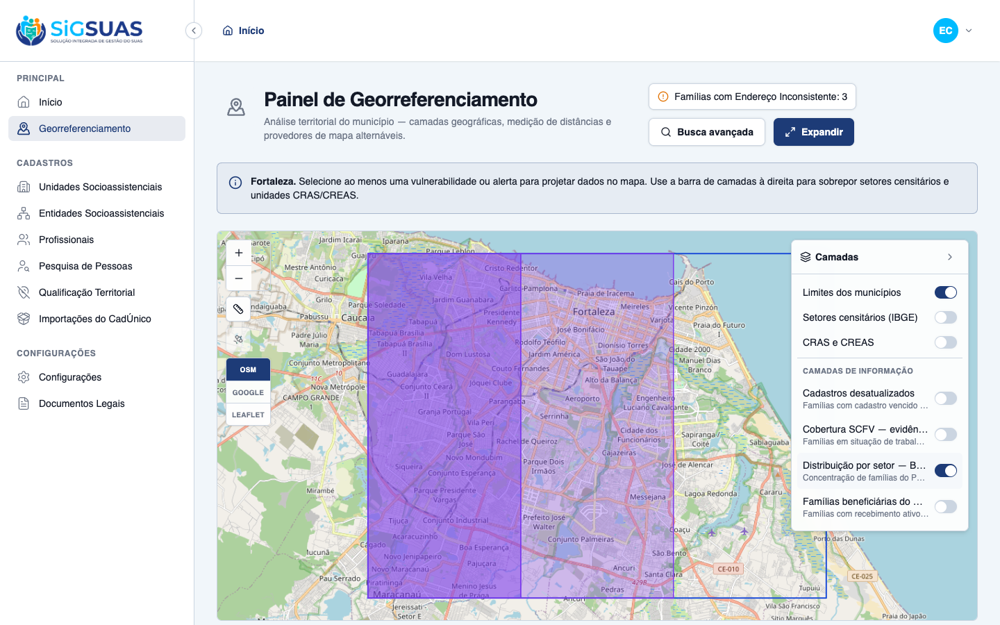
CA47 — Edição de camada publicada (HU-CAM-03) ATENDIDO · navegador + automatizado
Critério (Gherkin): Dado que uma camada está publicada, Quando edito sua descrição ou seus critérios de busca e salvo, Então a nova definição passa a valer para todos os tenants contemplados.
Como foi testado: Editar a camada publicada 'Famílias beneficiárias do PBF' em /app/geo-layers/{uuid}/editar; salvar nova descrição.
- UI: aviso âmbar 'Esta camada está publicada: ao salvar, a nova definição vale imediatamente para todas as organizações contempladas.'
- Descrição atualizada refletida no catálogo imediatamente após salvar (endpoint de dados executa sempre a definição corrente).
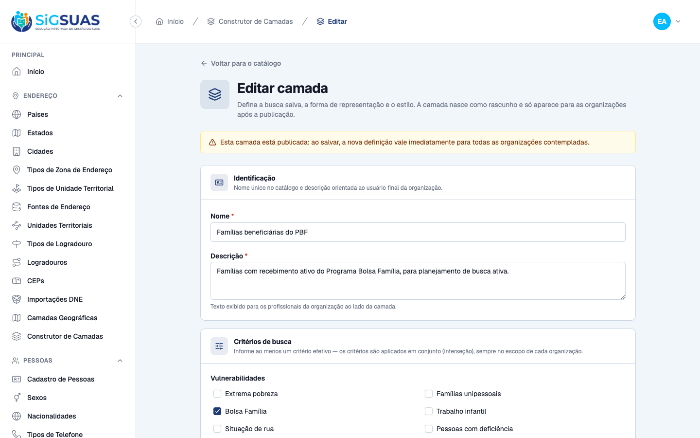
CA50 — Rastreabilidade das ações (HU-CAM-03) ATENDIDO · navegador + automatizado
Critério (Gherkin): Dado que realizei qualquer ação sobre uma camada, Quando o registro de auditoria é consultado, Então constam a ação, o autor e a data/hora.
Como foi testado: Consulta ao activity_log (log_name=geo_layer) após o roteiro completo — Anexo A.
- Trilha completa: created, published, audience_changed, inactivated, reactivated, previewed — com causer_id e timestamp, sem PII.
- GET /geo-layers/{uuid} expõe o histórico (campo history) — base do CA52.
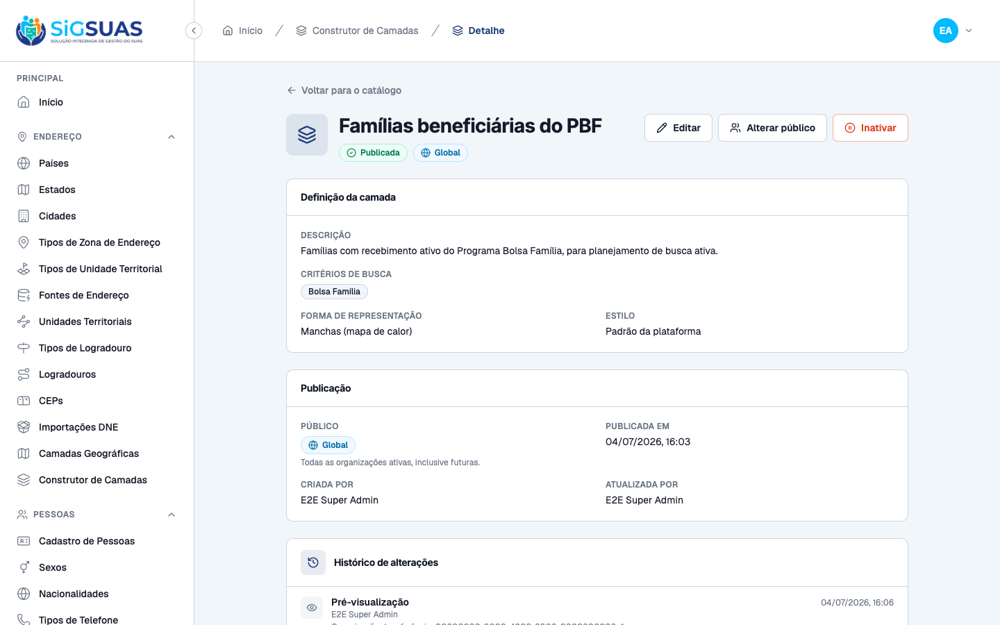
CA51 — Catálogo com filtros (HU-CAM-04) — lado servidor ATENDIDO · navegador + automatizado
Critério (Gherkin): Dado que acesso o catálogo de camadas, Quando aplico filtros por status (rascunho, publicada, inativa) ou por público, Então a lista exibe somente as camadas que atendem aos filtros.
Como foi testado: GET /geo-layers?filter[status]=published&filter[audience]=selected — Anexo A. Evidência visual da UI deferida à Etapa 02.
- API: filter[status]+filter[audience] combinados.
- UI: catálogo com badges de status/público; filtro 'Publicada' oculta rascunhos/inativas.
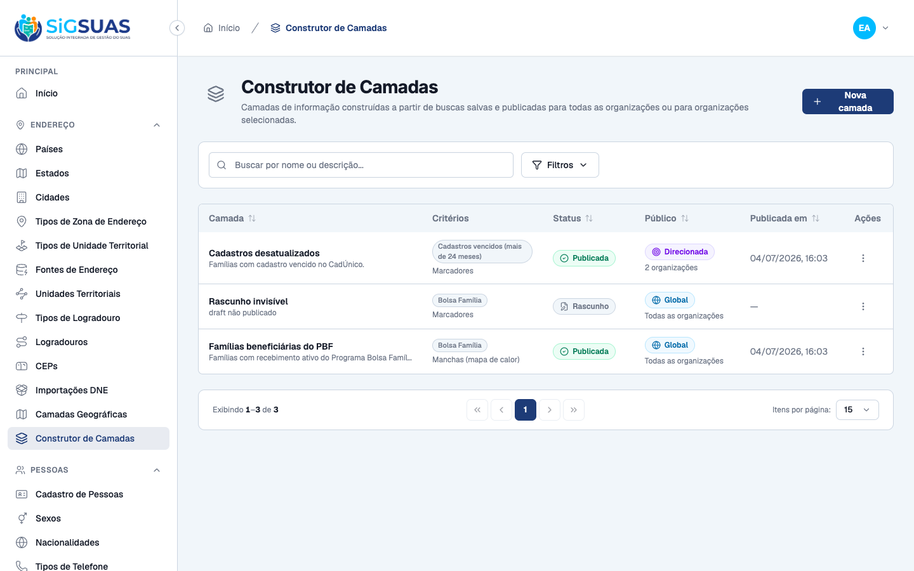
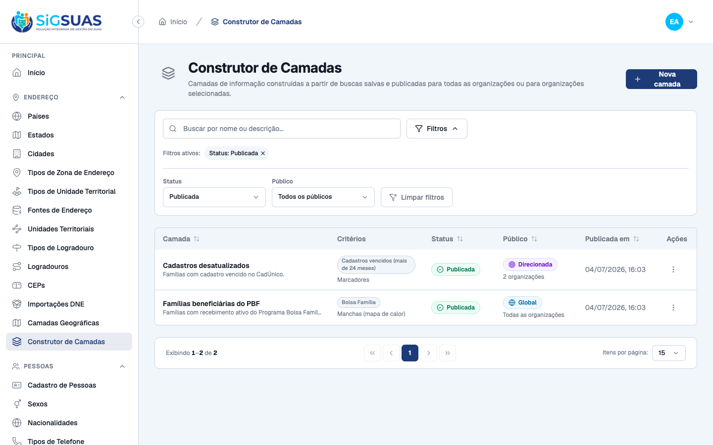
CA52 — Detalhe da camada com histórico (HU-CAM-04) — lado servidor ATENDIDO · navegador + automatizado
Critério (Gherkin): Dado que estou no catálogo, Quando abro uma camada, Então visualizo nome, descrição, critérios de busca, forma de representação, público de publicação, status e histórico de alterações.
Como foi testado: GET /geo-layers/{uuid} — Anexo A. Evidência visual da UI deferida à Etapa 02.
- Show traz definição completa + history ordenado (reactivated → inactivated → published → created).

RN06/P5 — Ciclo de vida sem exclusão — inativar/reativar/405 ATENDIDO · navegador + automatizado
Critério (Gherkin): Camadas não são excluídas definitivamente enquanto houver histórico de uso — apenas inativadas (RN06). Recurso sem DELETE (405).
Como foi testado: POST inactivate → fetch do tenant; POST reactivate → fetch; DELETE /geo-layers/{uuid} — Anexo A.
- API: inativada some do fetch do tenant; reativada volta ao público configurado; DELETE → 405.
- UI: dialog de inativação com aviso de efeito imediato (CA48); dialog de reativação (CA49); listagem reflete Inativa → Publicada mantendo público Global.
- UI (client, CA48 ao vivo): com a camada LIGADA no painel, o Administrador a inativa; ao reabrir a barra de camadas o cliente reconcilia, desliga a camada e exibe o toast 'não está mais disponível — removida ou inativada pelo administrador' (toggle some da sidebar).
- UI (client, CA49): reativada pelo Administrador, a camada volta à sidebar DESLIGADA (refetch de dados garantido pelo descarte de cache).
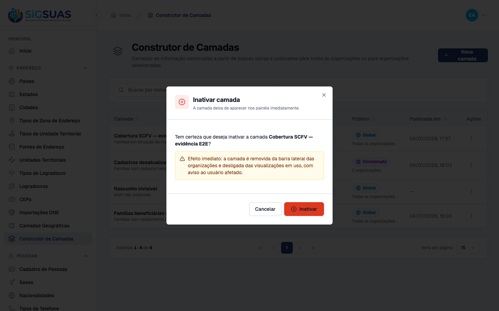
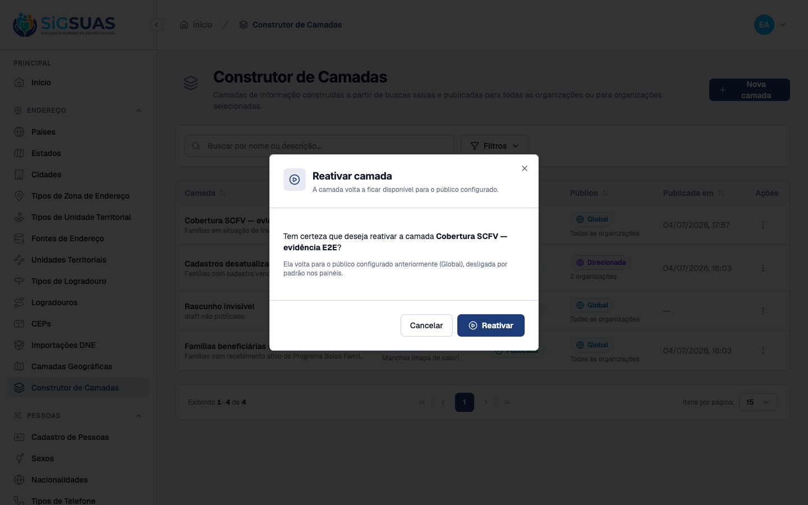
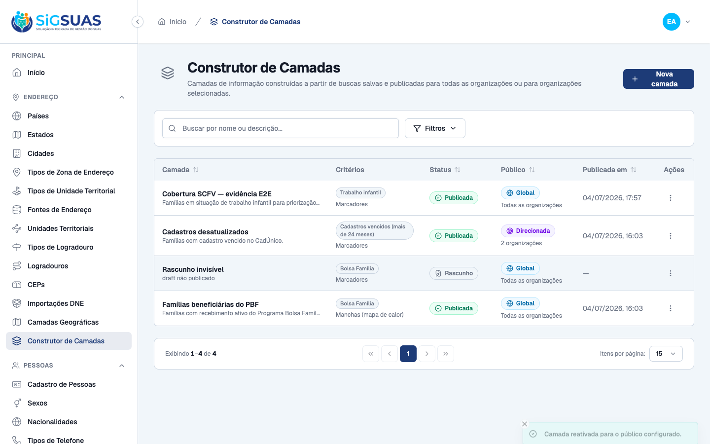
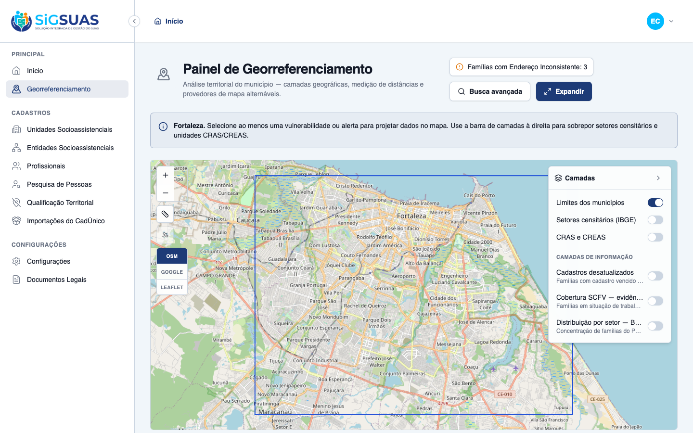
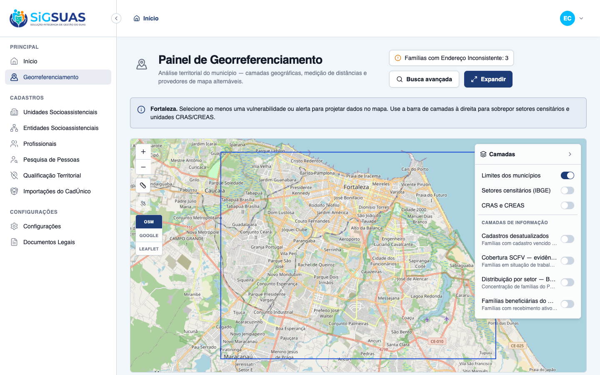
CA29* — CA29 da HU-GEO-01 — mescla do catálogo no painel (fechado aqui) ATENDIDO · navegador + automatizado
Critério (Gherkin): (HU-GEO-01) Dado que camadas do Construtor foram publicadas para o meu tenant, Quando abro o painel, Então a barra lateral lista as camadas built-in e as camadas publicadas, desligadas por padrão.
Como foi testado: Deferido da entrega HU-GEO-01 para esta (split documentado nos dois dossiês). GET /api/client/geo-panel/layers — Anexo A.
- API: resposta mescla built-ins + camadas custom publicadas visíveis ao tenant.
- UI (client): grupo 'Camadas de informação' na barra do painel lista as 4 camadas publicadas com nome/descrição, todas DESLIGADAS por padrão.
- Fechamento registrado também no dossiê da HU-GEO-01 (e2e/reports/hugeo01-acceptance/CA29-fechamento.md).

Anexo — Anexo A (transcript da API viva) + Anexo B (Pest --filter=GeoLayer|GeoPanelLayerData: 108 passed / 544 asserções)
===================================================================
ANEXO A — Transcript da API viva (curl, Sanctum stateful, :8090/esuas_e2e)
===================================================================
================================================================
== LOGIN manager (Sanctum stateful, super admin E2E — CPF mascarado 449.***.***-16)
================================================================
login manager/auth/login => HTTP 200
================================================================
== CA38 — bloqueio por dados obrigatórios: POST /geo-layers sem nome e sem critério efetivo
================================================================
HTTP 422
{
"message": "O campo nome \u00e9 obrigat\u00f3rio. (e mais 2 erros)",
"errors": {
"name": [
"O campo nome \u00e9 obrigat\u00f3rio."
],
"criteria": [
"O campo criteria \u00e9 obrigat\u00f3rio.",
"Informe ao menos um crit\u00e9rio de busca: vulnerabilidade, situa\u00e7\u00e3o de atualiza\u00e7\u00e3o cadastral ou setor censit\u00e1rio."
]
}
}
================================================================
== CA37 — criação de camada válida => 201, status draft, entra no catálogo
================================================================
HTTP 201
{
"data": {
"id": 1,
"uuid": "a08c2b8d-47b1-4722-9c8e-5a2c97da3432",
"name": "Fam\u00edlias benefici\u00e1rias do PBF",
"description": "Fam\u00edlias com recebimento ativo do Programa Bolsa Fam\u00edlia, para planejamento de busca ativa.",
"criteria": {
"vulnerabilities": [
"receives_pbf"
],
"update_status": null,
"sector_uuid": null,
"traditional_group_id": null
},
"representation": "heatmap",
"style": {
"palette": "warm"
},
"status": "draft",
"audience": "global",
"tenants_count": 0,
"published_at": null,
"inactivated_at": null,
"created_at": "2026-07-04T19:03:53.000000Z",
"updated_at": "2026-07-04T19:03:53.000000Z"
},
"message": "Camada criada como rascunho."
}
L1=a08c2b8d-47b1-4722-9c8e-5a2c97da3432
================================================================
== CA39 — nome duplicado (case-insensitive) bloqueado
================================================================
HTTP 422
{
"message": "J\u00e1 existe uma camada com este nome.",
"errors": {
"name": [
"J\u00e1 existe uma camada com este nome."
]
}
}
================================================================
== CA40 — preview por tenant único de referência (decisão PO: combobox de tenant)
================================================================
HTTP 422
Traceback (most recent call last):
File "<string>", line 2, in <module>
KeyError: 'data'
================================================================
== CA44 — trava de publicação sem bases homologadas (flip temporário de sync_status e reversão)
================================================================
bases des-homologadas temporariamente
HTTP 422
{
"message": "N\u00e3o \u00e9 poss\u00edvel publicar a camada: as bases geogr\u00e1ficas prim\u00e1rias (geometrias municipais e setores censit\u00e1rios) precisam estar importadas, conclu\u00eddas e sincronizadas. Homologue as duas bases em Importa\u00e7\u00f5es de Camadas Geogr\u00e1ficas.",
"errors": {
"geo_layer": [
"N\u00e3o \u00e9 poss\u00edvel publicar a camada: as bases geogr\u00e1ficas prim\u00e1rias (geometrias municipais e setores censit\u00e1rios) precisam estar importadas, conclu\u00eddas e sincronizadas. Homologue as duas bases em Importa\u00e7\u00f5es de Camadas Geogr\u00e1ficas."
]
}
}
bases restauradas (synced)
================================================================
== CA42 — publicação global (bases homologadas)
================================================================
HTTP 200
status: published | audience: global | published_at: 2026-07-04T19:03:54.000000Z
================================================================
== LOGIN client (master do tenant 1 — Organização E2E CadÚnico)
================================================================
login client/auth/login => HTTP 200
================================================================
== CA29 (HU-GEO-01) + CA42 — GET /client/geo-panel/layers mescla built-ins + camada custom global (desligada por padrão)
================================================================
HTTP 200
- boundary | municipal-boundaries | Limites dos municípios | builtin= True
- sectors | census-sectors | Setores censitários (IBGE) | builtin= True
- units | social-units | CRAS e CREAS | builtin= True
- custom | a08c2b8d-47b1-4722-9c8e-5a2c97da3432 | Famílias beneficiárias do PBF | builtin= False
================================================================
== CA43 — publicação direcionada: 2ª camada publicada SÓ para o tenant 2 (Matias e Mendes)
================================================================
HTTP 201
L2=0816af1f-895d-4194-ac67-41ecfbcdedc3
HTTP 200
status: published | audience: selected
-- tenant 1 NÃO deve ver a camada L2:
L2 visível p/ tenant 1? False
================================================================
== CA45 — alteração de público com efeito imediato (inclui tenant 1, sem nenhuma outra ação)
================================================================
HTTP 200
-- próximo fetch do tenant 1:
L2 visível p/ tenant 1? True
================================================================
== CA46 — dados da camada SEMPRE sob o tenant consumidor (pontos anônimos, sem PII)
================================================================
HTTP 200
total: 6 | points: 6 | chaves 1º ponto: ['count', 'lat', 'lng']
by_sector: []
-- camada draft NUNCA visível ao tenant => 404 (isolamento, nunca 403):
HTTP 404
================================================================
== RN06 lado servidor — inativação/reativação com efeito imediato na listagem do tenant
================================================================
HTTP 200
L1 visível após inativar? False
HTTP 200
L1 visível após reativar (volta ao público configurado)? True
================================================================
== RN06/P5 — DELETE ausente => 405
================================================================
HTTP 405
================================================================
== CA51 lado servidor — filtros do catálogo (status=published & audience=selected)
================================================================
HTTP 200
- Cadastros desatualizados | published | selected
================================================================
== CA52 lado servidor — detalhe com histórico
================================================================
HTTP 200
name: Famílias beneficiárias do PBF | status: published | audience: global
* reactivated | 2026-07-04T19:03:55.000000Z
* inactivated | 2026-07-04T19:03:55.000000Z
* published | 2026-07-04T19:03:54.000000Z
* created | 2026-07-04T19:03:53.000000Z
================================================================
== CA50 — trilha auditável no activity_log (banco, sem PII: causer_id numérico)
================================================================
created | causer=114 | 2026-07-04 19:03:53
published | causer=114 | 2026-07-04 19:03:54
created | causer=114 | 2026-07-04 19:03:55
published | causer=114 | 2026-07-04 19:03:55
audience_changed | causer=114 | 2026-07-04 19:03:55
created | causer=114 | 2026-07-04 19:03:55
inactivated | causer=114 | 2026-07-04 19:03:55
reactivated | causer=114 | 2026-07-04 19:03:55
================================================================
== CA40 (adendo) — geometria de Fortaleza estava is_active=false no banco e2e
== (efeito replace-all da sync #9868 — a importação de AL desativou ausentes).
== Reativando a geometria para o cenário positivo; o 422 acima fica como
== evidência NEGATIVA (tenant sem município com geometria homologada).
================================================================
city_geometry de Fortaleza reativada
-- preview da camada L1 com tenant de referência = tenant 1 (Fortaleza):
HTTP 200
city_geometry: presente (municipio Fortaleza )
total: 6
by_sector: []
points: 6 | chaves do 1º ponto (anônimo, sem PII): ['count', 'lat', 'lng']
-- trilha do preview (event=previewed, properties só com uuid do tenant):
previewed | causer=114 | props={"tenant":"00000000-0000-4000-8000-0000000000c1"}
== CA40 (adendo 2) — setores censitários de Fortaleza também estavam is_active=false (mesmo replace-all); reativados p/ massa das etapas 02/03:
setores 230440005000001..3 reativados
HTTP 200
total: 6
by_sector: [{"ibge_code_setor": "230440005000001", "name": "Setor Fixture 001 - Oeste", "families": 4}, {"ibge_code_setor": "230440005000002", "name": "Setor Fixture 002 - Centro", "families": 2}]
points: 6
===================================================================
ANEXO B — Suíte Pest filtrada (GeoLayer|GeoPanelLayerData), host/SQLite
===================================================================
PASS Tests\Unit\Models\GeoLayerTest
✓ it generates uuid, uses it as route key and casts criteria/style/en… 0.29s
✓ it resolves visibility to a tenant per the read contract — publishe… 0.04s
✓ it enforces the case-insensitive partial unique index on name (CA39… 0.01s
✓ it logs only the layer DEFINITION automatically, leaving lifecycle… 0.01s
PASS Tests\Unit\Services\Geo\GeoLayerSyncServiceTest
✓ it resolves city_id by cities.ibge_code without any foreign key 0.02s
✓ it counts city_not_found as skipped without writing business rows 0.01s
✓ it computes the bounding box centroid of the loaded polygon 0.01s
✓ it assigns the IBGE address source to the synced rows 0.01s
✓ it resolves the census sector city by the 7-digit prefix of the sec… 0.01s
✓ it deactivates active rows that are absent from the current load 0.01s
✓ it deactivates the paired geometry when a census sector becomes abs… 0.01s
✓ it deduplicates repeated ibge codes within the same load keeping th… 0.01s
PASS Tests\Unit\Services\GeoLayerLifecycleServiceTest
✓ it only reports the bases as homologated when BOTH are completed AN… 0.01s
✓ it rejects every invalid lifecycle transition (RN06) 0.01s
✓ it walks the full valid cycle draft → published → inactive → publis… 0.01s
✓ it publish with a selected audience fills the pivot; switching to g… 0.01s
PASS Tests\Feature\Api\Client\GeoPanelLayerDataTest
✓ it merges a globally published layer after the builtins, keeping th… 0.04s
✓ it shows a selected-audience layer only to the covered tenant (CA43… 0.02s
✓ it never lists draft or inactive layers on the tenant panel (CA48/R… 0.02s
✓ it reflects audience/status changes on the very next fetch — no cac… 0.03s
✓ it executes the layer criteria strictly under each consumer tenant… 0.04s
✓ it answers 404 (never 403) for a layer that is not visible to the t… 0.02s
✓ it serves the CURRENT definition of the layer — an admin edit refle… 0.03s
✓ it shapes the payload by representation: markers, boundaries and he… 0.03s
✓ it denies the layer data endpoint to an operator without the geo_pa… 0.02s
PASS Tests\Feature\Api\GeoLayerImportControllerTest
✓ it lists geo layer imports 0.02s
✓ it filters geo layer imports by layer_type 0.01s
✓ it filters geo layer imports by status 0.01s
✓ it shows a geo layer import with creator 0.01s
✓ it stores a municipal geometry import and dispatches the job on the… 0.04s
✓ it validates required fields on store 0.01s
✓ it rejects an invalid layer_type 0.01s
✓ it rejects a non-geojson file 0.01s
✓ it rejects a new import while another is pending or processing 0.01s
✓ it blocks storing a census sector layer while the municipal geometr… 0.01s
✓ it blocks the census sector layer when the municipal geometry is co… 0.01s
✓ it accepts a census sector layer once the municipal geometry is hom… 0.01s
✓ it soft deletes a geo layer import while preserving its stored file 0.01s
✓ it blocks deleting a processing import 0.01s
✓ it requires authentication 0.01s
✓ it forbids access without permissions 0.01s
✓ it forbids destroy without the destroy permission 0.01s
✓ it lists only trashed imports with filter[trashed]=only 0.02s
✓ it bulk destroys imports in a single soft-delete call 0.01s
✓ it rejects the whole batch when an id is processing 0.01s
✓ it validates ids on bulk destroy 0.01s
✓ it restores a soft-deleted import resolving the trashed binding 0.01s
✓ it returns 422 when restoring an import that is not trashed 0.01s
✓ it force deletes a trashed import removing the record and its store… 0.01s
✓ it logs a single force_destroyed activity without a duplicate delet… 0.01s
✓ it retries a failed import requeueing the job with the stored geojs… 0.02s
✓ it returns 422 when retrying an import that is not failed 0.01s
✓ it returns 422 when retrying an import whose geojson is missing fro… 0.01s
✓ it queues the layer sync for a completed import on the geo queue 0.01s
✓ it returns 422 when syncing an import that is not completed 0.01s
✓ it returns 422 when the import is already queued or syncing with da… 0.01s
✓ it returns 422 when the import is already queued or syncing with da… 0.01s
✓ it returns 422 when another import is already queued or syncing wit… 0.01s
✓ it returns 422 when another import is already queued or syncing wit… 0.01s
✓ it forbids sync without the sync permission 0.01s
✓ it exposes the sync state in the resource 0.01s
PASS Tests\Feature\Api\Manager\GeoLayerControllerTest
✓ it creates a layer as draft with normalized criteria and it shows u… 0.02s
✓ it blocks creation without name or without any criterion (CA38) 0.01s
✓ it rejects criteria outside the panel vocabulary (P3) 0.01s
✓ it blocks a duplicated name case-insensitively, but frees it after… 0.01s
✓ it filters the catalog by status and audience (CA51) 0.02s
✓ it shows the layer detail with audience tenants and the full audit… 0.02s
✓ it updates the current definition of a published layer (CA47) 0.01s
✓ it keeps the unique name rule on update, ignoring the layer itself… 0.01s
✓ it does not expose DELETE — the missing verb answers 405 (P5/RN06) 0.01s
✓ it blocks publish while BOTH national bases are not homologated (CA… 0.01s
✓ it publishes globally: empty pivot means every active tenant, prese… 0.02s
✓ it publishes to selected tenants only (CA43/RN04) 0.02s
✓ it requires the tenant list when publishing to a selected audience 0.01s
✓ it rejects publishing a layer that is not a draft (RN06) 0.01s
✓ it changes the audience of a published layer with immediate pivot s… 0.02s
✓ it only allows changing the audience of published layers (RN06) 0.01s
✓ it inactivates a published layer and rejects invalid transitions (C… 0.02s
✓ it reactivates an inactive layer back to the CONFIGURED audience (C… 0.01s
✓ it revalidates the RN03 gate on reactivation (CA44/CA49) 0.01s
✓ it rejects reactivating a layer that is not inactive (RN06) 0.01s
✓ it previews the layer under the single reference tenant — WYSIWYG,… 0.03s
✓ it never leaks another tenant of the same municipality into the pre… 0.02s
✓ it rejects the preview when the reference tenant has no homologated… 0.01s
✓ it requires a valid tenant_uuid on preview 0.01s
✓ it gives the admin_operador read-only access — every write is 403 (… 0.47s
✓ it gives the ADMIN every geo-layers ability through the automatic h… 0.44s
PASS Tests\Feature\Jobs\ProcessGeoLayerImportJobTest
✓ it processes a valid municipal geojson into staging features 0.02s
✓ it logs a processed activity with layer_type and feature_count 0.01s
✓ it replaces the staging on reprocess without duplicating features 0.01s
✓ it processes a census sector geojson with 15-digit codes into stagi… 0.01s
✓ it fails the import for structurally invalid geojson with dataset "… 0.01s
✓ it fails the import for structurally invalid geojson with dataset "… 0.01s
✓ it fails the import for structurally invalid geojson with dataset "… 0.01s
✓ it fails the import for structurally invalid geojson with dataset "… 0.01s
✓ it fails the import for structurally invalid geojson with dataset "… 0.01s
✓ it fails the import for structurally invalid geojson with dataset "… 0.01s
✓ it fails the import for structurally invalid geojson with dataset "… 0.01s
✓ it fails the import when the geojson file is missing from storage 0.01s
PASS Tests\Feature\Jobs\SyncGeoLayerJobTest
✓ it syncs a municipal geometry import into city_geometries resolving… 0.01s
✓ it marks syncing at the start of the handle before running the pipe… 0.01s
✓ it logs a synced activity with the summary 0.01s
✓ it resyncs idempotently updating existing geometries and deactivati… 0.02s
✓ it syncs a census sector import distributing sectors to cities by t… 0.01s
✓ it resyncs census sectors idempotently without duplicating sectors… 0.01s
✓ it deactivates the paired census_sector_geometries row when its sec… 0.01s
✓ it marks the sync as failed recording the error message with datase… 0.01s
✓ it marks the sync as failed recording the error message with datase… 0.01s
Tests: 108 passed (544 assertions)
Duration: 2.97s